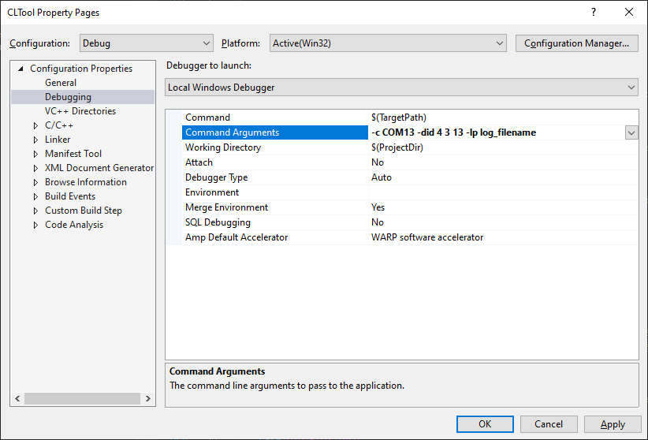

CLTool¶
Overview¶
The Inertial Sense CLTool is a command line utility that can be used to read and display data, update firmware, and log data from Inertial Sense products. Additionally, CLTool serves as example source code that demonstrates integration of the Inertial Sense SDK into your own source code. The CLTool can be compiled in Linux, Mac, Windows and embedded platforms.
Help Menu¶
Run "cltool -h" to display the help menu.
-----------------------------------------------------------------
DESCRIPTION
Command line utility for communicating, logging, and updating firmware with Inertial Sense product line.
EXAMPLES
cltool -c /dev/ttyS2 -did DID_INS_1 DID_GPS1_POS DID_PREINTEGRATED_IMU # stream DID messages
cltool -c /dev/ttyS2 -did 4 13 3 # stream same as line above
cltool -c /dev/ttyS2 -did 3=5 # stream DID_PREINTEGRATED_IMU at startupNavDtMs x 5
cltool -c /dev/ttyS2 -presetPPD # stream post processing data (PPD) with INS2
cltool -c /dev/ttyS2 -presetPPD -lon -lts=1 # stream PPD + INS2 data, logging, dir timestamp
cltool -c /dev/ttyS2 -edit DID_FLASH_CFG # edit DID_FLASH_CONFIG message
cltool -c /dev/ttyS2 -baud=115200 -did 5 13=10 # stream at 115200 bps, GPS streamed at 10x startupGPSDtMs
cltool -c /dev/ttyS2 -rover=RTCM3:192.168.1.100:7777:mount:user:password # Connect to RTK NTRIP base
cltool -rp logs/20170117_222549 # replay log files from a folder
cltool -c /dev/ttyS2 -uf fw/IS_uINS-3.hex -ub fw/SAMx70-Bootloader.bin -uv
# update application firmware and bootloader
cltool -c * -baud=921600 # 921600 bps baudrate on all serial ports
OPTIONS (General)
-h --help Display this help menu
-c COM_PORT Select the serial port. Set COM_PORT to "*" for all ports and "*4" to use
only the first four ports.
-baud=BAUDRATE Set serial port baudrate. Options: 115200, 230400, 460800, 921600 (default)
-magRecal[n] Recalibrate magnetometers: 0=multi-axis, 1=single-axis
-q Quiet mode, no display
-reset Issue software reset. Use caution.
-s Scroll displayed messages to show history
-stats Display statistics of data received
-survey=[s],[d] Survey-in and store base position to refLla: s=[2=3D, 3=float, 4=fix], d=durationSec
-uf FILEPATH Update application firmware using .hex file FILEPATH. Add -baud=115200 for systems w/ baud rate limits.
-ub FILEPATH Update bootloader using .bin file FILEPATH if version is old.
-uv Run verification after application firmware update.
OPTIONS (Message Streaming)
-did [DID#<=PERIODMULT> DID#<=PERIODMULT> ...] Stream 1 or more datasets and display w/ compact view.
-edit [DID#<=PERIODMULT>] Stream and edit 1 dataset.
Each DID# can be the DID number or name and appended with <=PERIODMULT> to decrease message frequency.
Message period = source period x PERIODMULT. PERIODMULT is 1 if not specified.
Common DIDs: DID_INS_1, DID_INS_2, DID_INS_4, DID_PREINTEGRATED_IMU, DID_IMU, DID_GPS1_POS,
DID_GPS2_RTK_CMP_REL, DID_BAROMETER, DID_MAGNETOMETER, DID_FLASH_CONFIG (see data_sets.h for complete list)
-dids Print list of all DID datasets
-persistent Save current streams as persistent messages enabled on startup
-presetPPD Stream preset post processing datasets (PPD)
-presetINS2 Stream preset INS2 datasets
OPTIONS (Logging to file, disabled by default)
-lon Enable logging
-lt=TYPE Log type: dat (default), sdat, kml or csv
-lp PATH Log data to path (default: ./IS_logs)
-lms=PERCENT Log max space in percent of free space (default: 0.5)
-lmf=BYTES Log max file size in bytes (default: 5242880)
-lts=0 Log sub folder, 0 or blank for none, 1 for timestamp, else use as is
-r Replay data log from default path
-rp PATH Replay data log from PATH
-rs=SPEED Replay data log at x SPEED. SPEED=0 runs as fast as possible.
OPTIONS (Read or write flash configuration from command line)
-flashCfg List all uINS "keys" and "values"
"-flashCfg=[key]=[value]|[key]=[value]"
-evbFlashCfg List all EVB "keys" and "values"
"-evbFlashCfg=[key]=[value]|[key]=[value]"
Set key / value pairs in flash config. Surround with "quotes" when using pipe operator.
EXAMPLES
cltool -c /dev/ttyS2 -flashCfg # Read from device and print all keys and values
cltool -c /dev/ttyS2 -flashCfg=insRotation[0]=1.5708|insOffset[1]=1.2
# Set multiple flashCfg values
OPTIONS (RTK Rover / Base)
-rover=[type]:[IP or URL]:[port]:[mountpoint]:[username]:[password]
As a rover (client), receive RTK corrections. Examples:
-rover=TCP:RTCM3:192.168.1.100:7777:mountpoint:username:password (NTRIP)
-rover=TCP:RTCM3:192.168.1.100:7777
-rover=TCP:UBLOX:192.168.1.100:7777
-rover=SERIAL:RTCM3:/dev/ttyS2:57600 (port, baud rate)
-base=[IP]:[port] As a Base (sever), send RTK corrections. Examples:
-base=TCP::7777 (IP is optional)
-base=TCP:192.168.1.43:7777
-base=SERIAL:/dev/ttyS2:921600
Compile & Run (Linux/Mac)¶
- You must have cmake installed on your machine. To do this, download the cmake application at https://cmake.org/download/. Then, using the command line, you will need to install cmake with either of the following commands depending on your platform:
Mac: sudo "/Applications/CMake.app/Contents.bin/cmake-gui" --install Linux: sudo apt-get install cmake -
Create build directory
$ cd cltool $ mkdir build -
Run cmake from within build directory
$ cd build $ cmake .. -
Compile using make
$ make -
If necessary, add current user to the "dialout" group in order to read and write to the USB serial communication ports:
$ sudo usermod -a -G dialout $USER $ sudo usermod -a -G plugdev $USER (reboot computer) -
Run executable
$ ./cltool
Compile & Run (Windows MS Visual Studio)¶
- Open Visual Studio solution file (InertialSenseSDK/cltool/VS_project/cltool.sln)
- Build (F7)
- Run executable
C:\InertialSenseSDK\cltool\VS_project\Release\cltool.exe
Update the Firmware¶
In order to update the firmware of your unit on the CLTool, follow these steps:
- Navigate to the directory with the CLTool executable
- Set the unit's COM port as an option, e.g.
-c COM15 - Specify the FILEPATH to the .hex file, e.g.
-uf foo/bar/IS_uINS-3.hex - Optionally specify the bootloader BLFILEPATH to the .bin file, e.g.
-ub foo/bar/SAMx70-Bootloader.bin - Run the executable
*Note: The firmware can only be updated at the following baud rates: 300000, 921600, 460800, 230400, 115200
Logging¶
- Make sure you have followed the steps shown above to compile your CLTool.
- Change your current directory to
/cpp/SDK/cltool/build - Type
./cltoolinto the command line while appending your desired options (All possible options can be accessed from the CLTool’s help menu which is accessed by entering./cltool -hinto the command line) - The options you will minimally need to log are these:
*
-lt=#(Defines the log type. Either e.g. -lt=dat or -lt=csv) *-lp /directory1/directory2/directory3(Specifies the path into which your files will be placed.) * If you don’t include this option, your data will be saved to/build/IS_logsif that directory has already been created. *-lon(Must be placed after all other options specified) - This is an example of what you could use as your logging options:
cltool -lon -lts=1 -lp /media/usbdrive/data
Command Line Options¶
Navigate to the directory /cpp/SDK/cltool/build and run the CLTool with the help option, "-h"
$ ./cltool -h
to display the command line options
Command Line Options in MS Visual Studio¶
When using MS Visual Studio IDE, command line arguments can be supplied by right clicking the project in the solution explorer and then selecting Configuration Properties -> Debugging -> Command Arguments (see image below).
